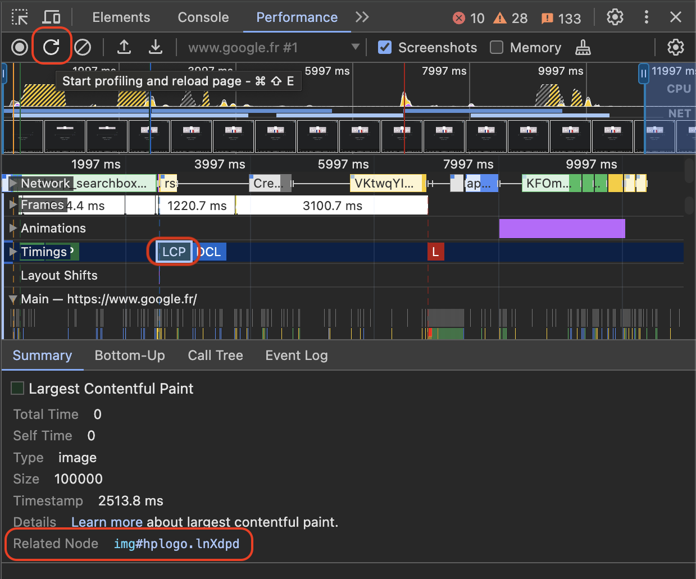

The NgOptimizedImage directive makes it easy to adopt performance best practices for loading images.
The directive ensures that the loading of the Largest Contentful Paint (LCP) image is prioritized by:
- Automatically setting the
fetchpriorityattribute on the<img>tag - Lazy loading other images by default
- Automatically generating a preconnect link tag in the document head
- Automatically generating a
srcsetattribute - Generating a preload hint if app is using SSR
In addition to optimizing the loading of the LCP image, NgOptimizedImage enforces a number of image best practices, such as:
- Using image CDN URLs to apply image optimizations
- Preventing layout shift by requiring
widthandheight - Warning if
widthorheighthave been set incorrectly - Warning if the image will be visually distorted when rendered
If you're using a background image in CSS, start here.
NOTE: Although the NgOptimizedImage directive was made a stable feature in Angular version 15, it has been backported and is available as a stable feature in versions 13.4.0 and 14.3.0 as well.
Getting Started
-
Import
NgOptimizedImagedirectiveImport
NgOptimizedImagedirective from@angular/common:import { NgOptimizedImage } from '@angular/common'and include it into the
importsarray of a standalone component or an NgModule:imports: [ NgOptimizedImage, // ...], -
(Optional) Set up a Loader
An image loader is not required in order to use NgOptimizedImage, but using one with an image CDN enables powerful performance features, including automatic
srcsets for your images.A brief guide for setting up a loader can be found in the Configuring an Image Loader section at the end of this page.
-
Enable the directive
To activate the
NgOptimizedImagedirective, replace your image'ssrcattribute withngSrc.<img ngSrc="cat.jpg">If you're using a built-in third-party loader, make sure to omit the base URL path from
src, as that will be prepended automatically by the loader. -
Mark images as
priorityAlways mark the LCP image on your page as
priorityto prioritize its loading.<img ngSrc="cat.jpg" width="400" height="200" priority>Marking an image as
priorityapplies the following optimizations:- Sets
fetchpriority=high(read more about priority hints here) - Sets
loading=eager(read more about native lazy loading here) - Automatically generates a preload link element if rendering on the server.
Angular displays a warning during development if the LCP element is an image that does not have the
priorityattribute. A page’s LCP element can vary based on a number of factors - such as the dimensions of a user's screen, so a page may have multiple images that should be markedpriority. See CSS for Web Vitals for more details. - Sets
-
Include Width and Height
In order to prevent image-related layout shifts, NgOptimizedImage requires that you specify a height and width for your image, as follows:
<img ngSrc="cat.jpg" width="400" height="200">For responsive images (images which you've styled to grow and shrink relative to the viewport), the
widthandheightattributes should be the intrinsic size of the image file. For responsive images it's also important to set a value forsizes.For fixed size images, the
widthandheightattributes should reflect the desired rendered size of the image. The aspect ratio of these attributes should always match the intrinsic aspect ratio of the image.NOTE: If you don't know the size of your images, consider using "fill mode" to inherit the size of the parent container, as described below.
Using fill mode
In cases where you want to have an image fill a containing element, you can use the fill attribute. This is often useful when you want to achieve a "background image" behavior. It can also be helpful when you don't know the exact width and height of your image, but you do have a parent container with a known size that you'd like to fit your image into (see "object-fit" below).
When you add the fill attribute to your image, you do not need and should not include a width and height, as in this example:
<img ngSrc="cat.jpg" fill>You can use the object-fit CSS property to change how the image will fill its container. If you style your image with object-fit: "contain", the image will maintain its aspect ratio and be "letterboxed" to fit the element. If you set object-fit: "cover", the element will retain its aspect ratio, fully fill the element, and some content may be "cropped" off.
See visual examples of the above at the MDN object-fit documentation.
You can also style your image with the object-position property to adjust its position within its containing element.
IMPORTANT: For the "fill" image to render properly, its parent element must be styled with position: "relative", position: "fixed", or position: "absolute".
How to migrate your background image
Here's a simple step-by-step process for migrating from background-image to NgOptimizedImage. For these steps, we'll refer to the element that has an image background as the "containing element":
- Remove the
background-imagestyle from the containing element. - Ensure that the containing element has
position: "relative",position: "fixed", orposition: "absolute". - Create a new image element as a child of the containing element, using
ngSrcto enable theNgOptimizedImagedirective. - Give that element the
fillattribute. Do not include aheightandwidth. - If you believe this image might be your LCP element, add the
priorityattribute to the image element.
You can adjust how the background image fills the container as described in the Using fill mode section.
Using placeholders
Automatic placeholders
NgOptimizedImage can display an automatic low-resolution placeholder for your image if you're using a CDN or image host that provides automatic image resizing. Take advantage of this feature by adding the placeholder attribute to your image:
<img ngSrc="cat.jpg" width="400" height="200" placeholder>Adding this attribute automatically requests a second, smaller version of the image using your specified image loader. This small image will be applied as a background-image style with a CSS blur while your image loads. If no image loader is provided, no placeholder image can be generated and an error will be thrown.
The default size for generated placeholders is 30px wide. You can change this size by specifying a pixel value in the IMAGE_CONFIG provider, as seen below:
providers: [ { provide: IMAGE_CONFIG, useValue: { placeholderResolution: 40 } },],If you want sharp edges around your blurred placeholder, you can wrap your image in a containing <div> with the overflow: hidden style. As long as the <div> is the same size as the image (such as by using the width: fit-content style), the "fuzzy edges" of the placeholder will be hidden.
Data URL placeholders
You can also specify a placeholder using a base64 data URL without an image loader. The data url format is data:image/[imagetype];[data], where [imagetype] is the image format, just as png, and [data] is a base64 encoding of the image. That encoding can be done using the command line or in JavaScript. For specific commands, see the MDN documentation. An example of a data URL placeholder with truncated data is shown below:
<img ngSrc="cat.jpg" width="400" height="200" placeholder="data:image/png;base64,iVBORw0K..."/>However, large data URLs increase the size of your Angular bundles and slow down page load. If you cannot use an image loader, the Angular team recommends keeping base64 placeholder images smaller than 4KB and using them exclusively on critical images. In addition to decreasing placeholder dimensions, consider changing image formats or parameters used when saving images. At very low resolutions, these parameters can have a large effect on file size.
Non-blurred placeholders
By default, NgOptimizedImage applies a CSS blur effect to image placeholders. To render a placeholder without blur, provide a placeholderConfig argument with an object that includes the blur property, set to false. For example:
<img ngSrc="cat.jpg" width="400" height="200" placeholder [placeholderConfig]="{blur: false}"/>Adjusting image styling
Depending on the image's styling, adding width and height attributes may cause the image to render differently. NgOptimizedImage warns you if your image styling renders the image at a distorted aspect ratio.
You can typically fix this by adding height: auto or width: auto to your image styles. For more information, see the web.dev article on the <img> tag.
If the width and height attribute on the image are preventing you from sizing the image the way you want with CSS, consider using fill mode instead, and styling the image's parent element.
Performance Features
NgOptimizedImage includes a number of features designed to improve loading performance in your app. These features are described in this section.
Add resource hints
A preconnect resource hint for your image origin ensures that the LCP image loads as quickly as possible.
Preconnect links are automatically generated for domains provided as an argument to a loader. If an image origin cannot be automatically identified, and no preconnect link is detected for the LCP image, NgOptimizedImage will warn during development. In that case, you should manually add a resource hint to index.html. Within the <head> of the document, add a link tag with rel="preconnect", as shown below:
<link rel="preconnect" href="https://my.cdn.origin" />To disable preconnect warnings, inject the PRECONNECT_CHECK_BLOCKLIST token:
providers: [ {provide: PRECONNECT_CHECK_BLOCKLIST, useValue: 'https://your-domain.com'}],See more information on automatic preconnect generation here.
Request images at the correct size with automatic srcset
Defining a srcset attribute ensures that the browser requests an image at the right size for your user's viewport, so it doesn't waste time downloading an image that's too large. NgOptimizedImage generates an appropriate srcset for the image, based on the presence and value of the sizes attribute on the image tag.
Fixed-size images
If your image should be "fixed" in size (i.e. the same size across devices, except for pixel density), there is no need to set a sizes attribute. A srcset can be generated automatically from the image's width and height attributes with no further input required.
Example srcset generated:
<img ... srcset="image-400w.jpg 1x, image-800w.jpg 2x">Responsive images
If your image should be responsive (i.e. grow and shrink according to viewport size), then you will need to define a sizes attribute to generate the srcset.
If you haven't used sizes before, a good place to start is to set it based on viewport width. For example, if your CSS causes the image to fill 100% of viewport width, set sizes to 100vw and the browser will select the image in the srcset that is closest to the viewport width (after accounting for pixel density). If your image is only likely to take up half the screen (ex: in a sidebar), set sizes to 50vw to ensure the browser selects a smaller image. And so on.
If you find that the above does not cover your desired image behavior, see the documentation on advanced sizes values.
Note that NgOptimizedImage automatically prepends "auto" to the provided sizes value. This is an optimization that increases the accuracy of srcset selection on browsers which support sizes="auto", and is ignored by browsers which do not.
By default, the responsive breakpoints are:
[16, 32, 48, 64, 96, 128, 256, 384, 640, 750, 828, 1080, 1200, 1920, 2048, 3840]
If you would like to customize these breakpoints, you can do so using the IMAGE_CONFIG provider:
providers: [ { provide: IMAGE_CONFIG, useValue: { breakpoints: [16, 48, 96, 128, 384, 640, 750, 828, 1080, 1200, 1920] } },],If you would like to manually define a srcset attribute, you can provide your own using the ngSrcset attribute:
<img ngSrc="hero.jpg" ngSrcset="100w, 200w, 300w">If the ngSrcset attribute is present, NgOptimizedImage generates and sets the srcset based on the sizes included. Do not include image file names in ngSrcset - the directive infers this information from ngSrc. The directive supports both width descriptors (e.g. 100w) and density descriptors (e.g. 1x).
<img ngSrc="hero.jpg" ngSrcset="100w, 200w, 300w" sizes="50vw">Disabling automatic srcset generation
To disable srcset generation for a single image, you can add the disableOptimizedSrcset attribute on the image:
<img ngSrc="about.jpg" disableOptimizedSrcset>Disabling image lazy loading
By default, NgOptimizedImage sets loading=lazy for all images that are not marked priority. You can disable this behavior for non-priority images by setting the loading attribute. This attribute accepts values: eager, auto, and lazy. See the documentation for the standard image loading attribute for details.
<img ngSrc="cat.jpg" width="400" height="200" loading="eager">Advanced 'sizes' values
You may want to have images displayed at varying widths on differently-sized screens. A common example of this pattern is a grid- or column-based layout that renders a single column on mobile devices, and two columns on larger devices. You can capture this behavior in the sizes attribute, using a "media query" syntax, such as the following:
<img ngSrc="cat.jpg" width="400" height="200" sizes="(max-width: 768px) 100vw, 50vw">The sizes attribute in the above example says "I expect this image to be 100 percent of the screen width on devices under 768px wide. Otherwise, I expect it to be 50 percent of the screen width.
For additional information about the sizes attribute, see web.dev or mdn.
Configuring an image loader for NgOptimizedImage
A "loader" is a function that generates an image transformation URL for a given image file. When appropriate, NgOptimizedImage sets the size, format, and image quality transformations for an image.
NgOptimizedImage provides both a generic loader that applies no transformations, as well as loaders for various third-party image services. It also supports writing your own custom loader.
| Loader type | Behavior |
|---|---|
| Generic loader | The URL returned by the generic loader will always match the value of src. In other words, this loader applies no transformations. Sites that use Angular to serve images are the primary intended use case for this loader. |
| Loaders for third-party image services | The URL returned by the loaders for third-party image services will follow API conventions used by that particular image service. |
| Custom loaders | A custom loader's behavior is defined by its developer. You should use a custom loader if your image service isn't supported by the loaders that come preconfigured with NgOptimizedImage. |
Based on the image services commonly used with Angular applications, NgOptimizedImage provides loaders preconfigured to work with the following image services:
| Image Service | Angular API | Documentation |
|---|---|---|
| Cloudflare Image Resizing | provideCloudflareLoader |
Documentation |
| Cloudinary | provideCloudinaryLoader |
Documentation |
| ImageKit | provideImageKitLoader |
Documentation |
| Imgix | provideImgixLoader |
Documentation |
| Netlify | provideNetlifyLoader |
Documentation |
To use the generic loader no additional code changes are necessary. This is the default behavior.
Built-in Loaders
To use an existing loader for a third-party image service, add the provider factory for your chosen service to the providers array. In the example below, the Imgix loader is used:
providers: [ provideImgixLoader('https://my.base.url/'),],The base URL for your image assets should be passed to the provider factory as an argument. For most sites, this base URL should match one of the following patterns:
You can learn more about the base URL structure in the docs of a corresponding CDN provider.
Custom Loaders
To use a custom loader, provide your loader function as a value for the IMAGE_LOADER DI token. In the example below, the custom loader function returns a URL starting with https://example.com that includes src and width as URL parameters.
providers: [ { provide: IMAGE_LOADER, useValue: (config: ImageLoaderConfig) => { return `https://example.com/images?src=${config.src}&width=${config.width}`; }, },],A loader function for the NgOptimizedImage directive takes an object with the ImageLoaderConfig type (from @angular/common) as its argument and returns the absolute URL of the image asset. The ImageLoaderConfig object contains the src property, and optional width and loaderParams properties.
NOTE: even though the width property may not always be present, a custom loader must use it to support requesting images at various widths in order for ngSrcset to work properly.
The loaderParams Property
There is an additional attribute supported by the NgOptimizedImage directive, called loaderParams, which is specifically designed to support the use of custom loaders. The loaderParams attribute takes an object with any properties as a value, and does not do anything on its own. The data in loaderParams is added to the ImageLoaderConfig object passed to your custom loader, and can be used to control the behavior of the loader.
A common use for loaderParams is controlling advanced image CDN features.
Example custom loader
The following shows an example of a custom loader function. This example function concatenates src and width, and uses loaderParams to control a custom CDN feature for rounded corners:
const myCustomLoader = (config: ImageLoaderConfig) => { let url = `https://example.com/images/${config.src}?`; let queryParams = []; if (config.width) { queryParams.push(`w=${config.width}`); } if (config.loaderParams?.roundedCorners) { queryParams.push('mask=corners&corner-radius=5'); } return url + queryParams.join('&');};Note that in the above example, we've invented the 'roundedCorners' property name to control a feature of our custom loader. We could then use this feature when creating an image, as follows:
<img ngSrc="profile.jpg" width="300" height="300" [loaderParams]="{roundedCorners: true}">Frequently Asked Questions
Does NgOptimizedImage support the background-image css property?
The NgOptimizedImage does not directly support the background-image css property, but it is designed to easily accommodate the use case of having an image as the background of another element.
For a step-by-step process for migration from background-image to NgOptimizedImage, see the How to migrate your background image section above.
Why can't I use src with NgOptimizedImage?
The ngSrc attribute was chosen as the trigger for NgOptimizedImage due to technical considerations around how images are loaded by the browser. NgOptimizedImage makes programmatic changes to the loading attribute -- if the browser sees the src attribute before those changes are made, it will begin eagerly downloading the image file, and the loading changes will be ignored.
Why is a preconnect element not being generated for my image domain?
Preconnect generation is performed based on static analysis of your application. That means that the image domain must be directly included in the loader parameter, as in the following example:
providers: [ provideImgixLoader('https://my.base.url/'),],If you use a variable to pass the domain string to the loader, or you're not using a loader, the static analysis will not be able to identify the domain, and no preconnect link will be generated. In this case you should manually add a preconnect link to the document head, as described above.
Can I use two different image domains in the same page?
The image loaders provider pattern is designed to be as simple as possible for the common use case of having only a single image CDN used within a component. However, it's still very possible to manage multiple image CDNs using a single provider.
To do this, we recommend writing a custom image loader which uses the loaderParams property to pass a flag that specifies which image CDN should be used, and then invokes the appropriate loader based on that flag.
Can you add a new built-in loader for my preferred CDN?
For maintenance reasons, we don't currently plan to support additional built-in loaders in the Angular repository. Instead, we encourage developers to publish any additional image loaders as third-party packages.
Can I use this with the <picture> tag
No, but this is on our roadmap, so stay tuned.
If you're waiting on this feature, please upvote the Github issue here.
How do I find my LCP image with Chrome DevTools?
Using the performance tab of the Chrome DevTools, click on the "start profiling and reload page" button on the top left. It looks like a page refresh icon.
This will trigger a profiling snapshot of your Angular application.
Once the profiling result is available, select "LCP" in the timings section.
A summary entry should appear in the panel at the bottom. You can find the LCP element in the row for "related node". Clicking on it will reveal the element in the Elements panel.

NOTE: This only identifies the LCP element within the viewport of the page you are testing. It is also recommended to use mobile emulation to identify the LCP element for smaller screens.